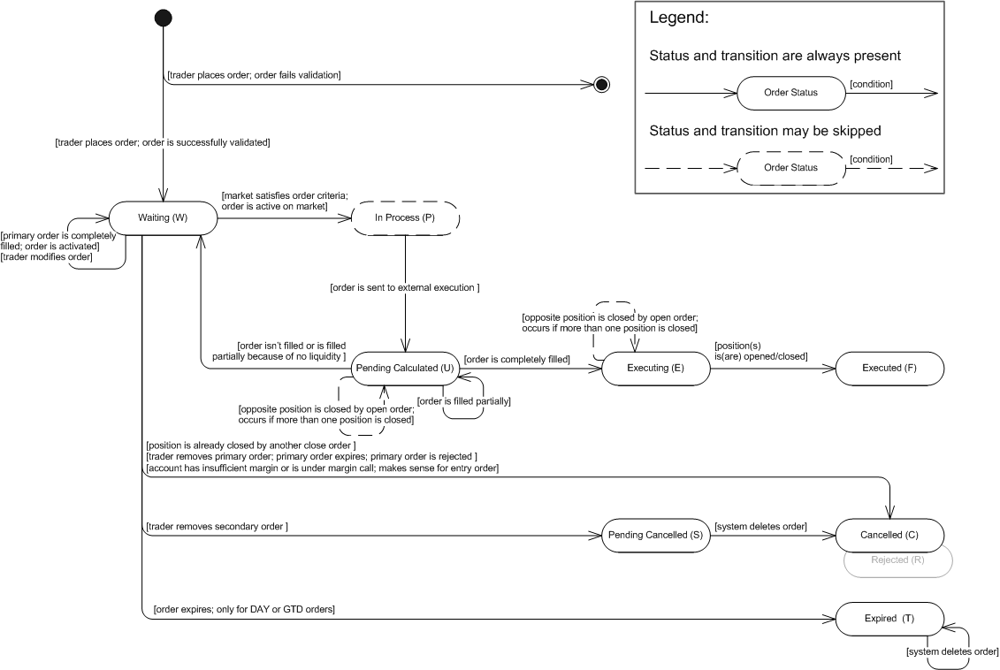

OTO (One-Triggers-the-Other) Contingent Order
Brief
The article describes the OTO (One-Triggers-the-Other) contingent order.
Details
An OTO (One-Triggers-the-Other) Contingent Order is a contingent order consisting of two (or more) linked orders: one primary order and one (or more) secondary orders. When the OTO contingent order is placed, the primary order becomes active while the secondary orders remain inactive. Once the primary order is executed, the secondary orders are automatically triggered (activated). The primary and secondary orders can be placed from one and the same account but for different instruments. The primary order also can be a primary order for the ELS Contingent Order.
The secondary order can be a primary order of another OTO contingent order as well.
Ether an entry or a market order can be a primary order. Only an entry order can be a secondary order. The trade operation of the secondary orders does not depend on the trade operation of the primary order and can be the same or opposite. The amount also does not depend on the amount of the primary order.
The additional feature of the OTO contingent order is that the If-Then order may be used as a primary order. The If-Then order isn't an order generaly. it doesn't buy or sell an instrument. It is only an activation signal to secondary orders. The If-Then order works in the same manner as an entry order. Once the market price reaches the price specified in the order, it is "executed" and the secondary orders are activated on market.
The time-in-force options and execution details for a primary order are the same as those an Entry Limit, Entry Stop and Open Market, Open, Open Limit, Open Range orders.
The time-in-force options execution details for a secondary order are the same as those for either an Limit/Entry Limit Order or Stop/Entry Stop Order.
As it was said above, secondary orders become active only after the primary order is completely executed. If the primary order is completely or partially rejected the secondary orders are cancelled. When the secondary orders become active, they turn to regular entry orders. See execution Scenario 1, Scenario 2, Scenario 3, Scenario 4.
If the primary order expires (makes sense only for orders with DAY or GTD time-in-force option), all secondary orders expire as well.
If the primary order is cancelled by the trader, the secondary orders are automatically cancelled.
If a secondary order is cancelled by the trader, this doesn’t affect the other secondary orders.
If the primary order is rejected (for example, doesn’t pass validation), the secondary orders are automatically cancelled.
If the primary order is partially rejected (for example, doesn't completely filled because of IOC time-in-force option), the secondary orders are automatically cancelled.
If a secondary order is rejected due to unsuccessful validation, this doesn’t affect the primary order and the other secondary orders.
The OTO secondary order state machine is based on the FXCM order statuses. The description of order statuses, their transitions and state machine are provided below. Note that the order is created by the system only after successful order validation. If the order does not pass validation, the system creates a rejection message and does not store the order in the database. However, the information about the order (such as, for example, the order ID and the reason for its rejection) is stored in the database. So, the initial transition on the diagram indicates that the order is successfully validated.
OTO Secondary Order: State Machine

OTO Secondary Order: FXCM Order Statuses Description
Order Status |
Order Status Description |
Transition |
||||||||||
Waiting (W) |
The status has one of the following meanings:
|
|
||||||||||
In Process (P) |
The market price satisfied the criteria set in the secondary order; the order is ready for further execution. |
|
||||||||||
Pending Calculated (U) |
The status has one of the following meanings:
|
|
||||||||||
Executing (E) |
The secondary order was completely filled. |
|
||||||||||
Executed (F) |
A position was opened/closed. Note that the order may result in a number of open/closed positions. |
|||||||||||
Pending Cancelled (S) |
The order was removed by the trader. |
|
||||||||||
Cancelled (C) |
The status has one of the following meanings:
|
|||||||||||
Expired (T) |
The status is applicable only to DAY or GTD orders: |
|